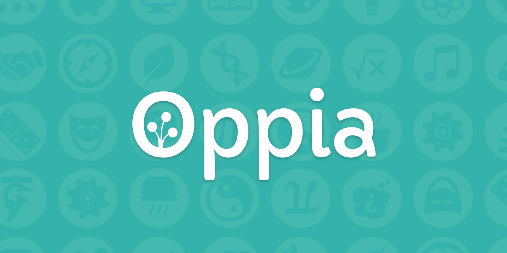

Projeto Final da Equipe Radia Perlman - Turma 2 - 2025.2¶
Avaliação de Qualidade da Plataforma Oppia¶
Esta página documenta o desenvolvimento do projeto final da disciplina FGA0315 – Qualidade de Software 1 da Faculdade de Ciências e Tecnologias em Engenharia da Universidade de Brasília (FCTE-UnB). Nosso objetivo é conduzir uma avaliação de qualidade de produto de software, aplicando os conceitos e as práticas da área sobre a plataforma de aprendizado interativo Oppia.
Sobre a Plataforma Oppia¶
Figura 1 – Logo da plataforma Oppia
Fonte: oppia.org
Oppia é uma plataforma de aprendizado online, gratuita e de código aberto, desenvolvida pela Oppia Foundation, uma organização sem fins lucrativos. Sua missão é ampliar o acesso a recursos educacionais de qualidade, especialmente para estudantes em comunidades com menos oportunidades 1.
Aprendizagem Interativa¶
As lições na Oppia, chamadas de explorações, são interativas e estruturadas como diálogos tutor-aluno. O estudante recebe conceitos, responde a perguntas e recebe feedback imediato com base em suas respostas, o que favorece a correção de equívocos no próprio momento da aprendizagem.
Tecnologia e Comunidade¶
A plataforma é mantida por uma comunidade global de voluntários — educadores, desenvolvedores, designers e tradutores. Por ser baseada na web, ela pode ser acessada em qualquer dispositivo com um navegador, o que garante sua ampla disponibilidade. Sua capacidade de ensinar conceitos de maneira precisa e completa é fundamental para que cumpra seu propósito educacional 1.
Quem é Radia Perlman?¶
Figura 2 – Radia Perlman
Fonte: Wikipedia
Radia Perlman é uma cientista da computação e engenheira de redes amplamente conhecida como a "Mãe da Internet". Sua contribuição mais famosa é a invenção do Spanning Tree Protocol (STP), um protocolo de rede fundamental que previne a criação de loops em redes Ethernet com pontes. O STP é essencial para a estabilidade e a confiabilidade das redes locais (LANs) que usamos hoje 2.
Formada com Ph.D. pelo MIT, suas inovações não pararam no STP. Ela também foi uma figura chave no desenvolvimento de protocolos de roteamento link-state, como o IS-IS, e mais recentemente no TRILL (Transparent Interconnection of Lots of Links), projetado para otimizar o roteamento em grandes data centers. Seu trabalho pioneiro foi crucial para permitir que as redes crescessem em escala e complexidade de forma robusta e segura 3.
Equipe¶


Histórico de Versões¶
| Versão | Data | Descrição | Autor | Revisor |
|---|---|---|---|---|
1.0 |
28/09/2025 | Criação da estrutura inicial da página e inclusão de informações gerais | Brunno Fernandes | Bianca Patrocínio |
1.1 |
29/09/2025 | Inclusão das informações sobre a plataforma e as referências | Brunno Fernandes | Bianca Patrocínio |
2.0 |
24/11/2025 | Atualização da equipe | Brunno Fernandes | Bianca Patrocínio |
Referências¶
-
OPPIA FOUNDATION. About Oppia. Disponível em: https://www.oppia.org/about. Acesso em: 28 set. 2025. ↩↩
-
RADIA PERLMAN. In: WIKIPEDIA, a enciclopédia livre. Flórida: Wikimedia Foundation, 2023. Disponível em: https://pt.wikipedia.org/wiki/Radia_Perlman. Acesso em: 28 set. 2025. ↩
-
INTERNET HALL OF FAME. Radia Perlman. Disponível em: https://www.internethalloffame.org/inductees/radia-perlman. Acesso em: 28 set. 2025. ↩